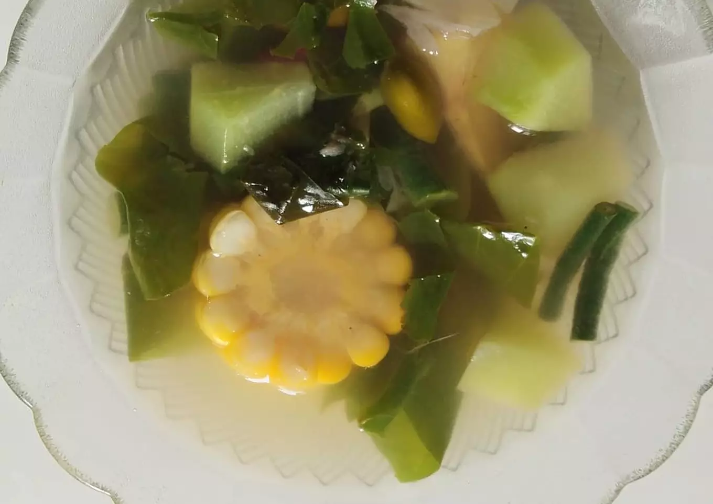

1. Sayur Asem Bening

Bahan:
- 1 ikat daun melinjo
- 5 buah kacang panjang
- 1 buah labu siam
- 1 buah jagung
- 2 buah wortel
- 3 siung bawang merah iris
- 2 siung bawang putih iris
- 2 lembar daun salam
- 3 cm lengkuas geprek
- 1 buah tomat iris
- 2 sdm ai asem
- garam,gula,kaldu bubuk
- 700 ml air
Cara membuat:
- Bersihkan semua sayur lalu potong-ptong sesuai selera sisihkan.
- Rebus air bersama bawang merah dan bawang putih iris, daun salam, dan lengkuas. Biarkan hingga mendidih.
- Kemudian masukan wortel, jagung, labu biarkan setengah matang, lalu masukan kacang panjang, gula, garam, kaldu bubuk.
- Terahir masukan daun melinjo sampai layu cek rasa.
- Angkat dan sajikan.